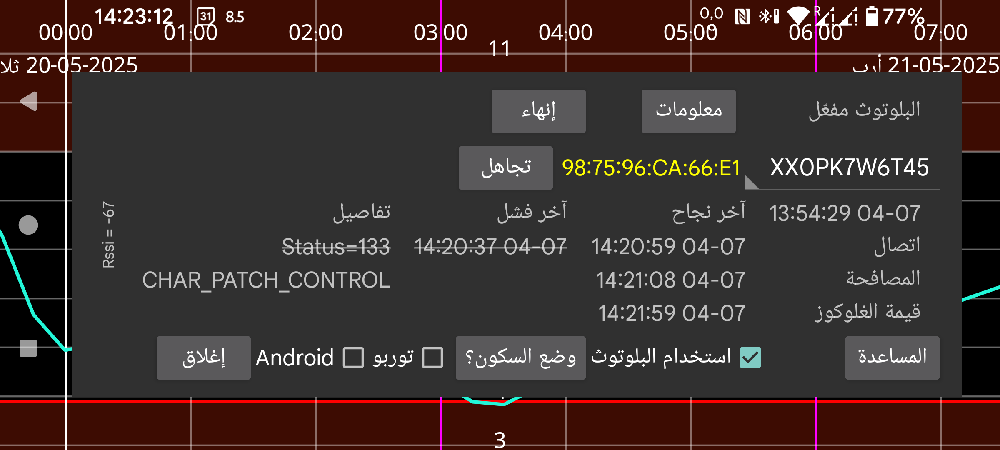

ar be de es fr it nl pl pt ru tr uk zh en
تحتوي القائمة المنسدلة على اسم المستشعر. وإذا كان Juggluco يستخدم أكثر من مستشعر في الوقت نفسه، فيمكنك اختيار المستشعر الذي تريد عرض معلوماته.
وضع Doze ينقلك إلى شاشة تشرح كيفية تعطيل تحسينات البطارية الخاصة بـ Juggluco، لأن هذه التحسينات قد تمنعه من العمل بشكل صحيح.
سجل البلوتوث: في Libre 2 تكون قيم السجل هي قيمًا سابقة بفواصل 15 دقيقة. في السابق لم يكن يتم استلامها إلا عن طريق المسح. عند تشغيل هذا الخيار تُستقبل قيم السجل أيضًا عبر البلوتوث. كما أن أشياء أخرى ستعمل بطريقة مختلفة. فبدلًا من إرسال متوسطات قيم البث إلى Libreview، سترسل قيم السجل نفسها. والعيب هو أن هذا أبطأ، وقد يكون ذلك مشكلة في ساعات WearOS. لا يؤثر هذا الخيار في مستشعرات Libre 3 ولا في مستشعرات Libre 2 الخاصة بالولايات المتحدة/كندا/أستراليا/كوريا، لأنها تستقبل دائمًا قيم السجل عبر البلوتوث.
خلل: هذا الخيار مهم فقط على WearOS مع Libre 3. يجب تفعيله في Samsung Galaxy Watch 5 وما بعدها إلى أن تصلح Samsung هذا الخلل. من دون هذا الخيار ستُستقبل قيم الغلوكوز كل دقيقتين بدلًا من كل دقيقة. أما Watch 5 حتى Ultra فستستقبل دائمًا قيم Libre 2 بفاصل دقيقتين.
⏰: يسمح هذا لـ Juggluco باستخدام وظيفة ساعة المنبّه لضمان التوقيت الصحيح للاتصال بمستشعرات Dexcom G7 وONE+. من دونه، عندما يكون الجهاز في نوم عميق أثناء عدم الاستخدام، قد لا يستيقظ أحيانًا لإعادة الاتصال بالمستشعر، وبالتالي لا يستقبل قيمة غلوكوز فورًا. حدث هذا في ساعة WearOS الخاصة بي في منتصف الليل، غالبًا لأنني لم أتحرك كثيرًا. وبسبب الاستكمال اللاحق للبيانات والاستيقاظ البطيء لم ألاحظ ذلك على الساعة أو الهاتف، وإنما فقط في ملفات السجل. هاتفي لا يحتاج إلى هذا الإعداد، بل يبدو أن أداءه يسوء عند تشغيله.
الإذن: كانت الإصدارات السابقة من Juggluco تحتاج إلى إذن الموقع للعثور على عنوان الجهاز الخاص بالمستشعر. لم يعد ذلك ضروريًا للمستشعرات التي أستخدمها. وربما ما زالت هناك مستشعرات أخرى تحتاج إليه؛ في هذه الحالة يمكنك تشغيله. بعد أول اتصال يحفظ Juggluco عنوان الجهاز، وعندها يصبح إذن الموقع غير مفيد دائمًا. وإذا كان عنوان الجهاز معروفًا، فسيُعرض بعد معرّف المستشعر. واللون الأحمر يعني أن المستشعر من النوع الشبيه بالمستشعرات الأمريكية. في Android 12 يوجد إذن جديد باسم الأجهزة القريبة يمكن استخدامه بدل إذن الموقع للبحث عن عنوان جهاز بلوتوث، لكنه مطلوب أيضًا للاتصال اللاحق بأجهزة البلوتوث.
تجاهل: يجعل Juggluco ينسى عنوان الجهاز ويعيد البحث عنه. وفي بعض المستشعرات يلزم ذلك للحصول على اتصال، ويقوم Juggluco به تلقائيًا حين تكون الحاجة إليه واضحة. بواسطة هذا الزر يمكنك أن تطلب يدويًا من Juggluco فعل ذلك، لأن هذا قد يكون مطلوبًا أيضًا في حالات أخرى.
إنهاء: يوقف الاتصال بهذا المستشعر عبر البلوتوث. وإذا أردت لاحقًا استقبال قيم البث من هذا المستشعر مرة أخرى، فكل ما عليك هو إعادة مسحه. وإذا كان المستشعر متصلًا مباشرة بالساعة، فيجب أولًا إيقاف ذلك، ثم الضغط على إنهاء في الهاتف، ثم الضغط على مزامنة في الساعة.
إلغاء الإقران: تتذكر مستشعرات Aidex X الهاتف أو الساعة التي أُقرنت بها، وترفض الارتباط بأجهزة أخرى. عند الضغط على «إلغاء الإقران» يُرسَل أمر إلى المستشعر، وإذا نجح يصبح بالإمكان من جديد أن تتصل به هواتف أو ساعات أخرى. وعند استخدام القائمة اليسرى→الساعة→ضبط Wear OS → «مستشعر مباشر…» لنقل المستشعر من الساعة وإليها، فستُجرى عملية فك الإقران أيضًا، لذلك لا ينبغي استخدام «إلغاء الإقران».
مسح: (يظهر الزر فقط عند الاتصال بمستشعرات Aidex X). الضغط على هذا الزر يزيل جميع قيم الغلوكوز من المستشعر ويعيد تشغيله كما لو كان مستشعرًا جديدًا. وهذا يجعل من الممكن استخدام المستشعر لأكثر من 15 يومًا.
إعادة الضبط: لمستشعر Sibionics 2 فقط. عند تبديل المستشعر داخل جهاز الإرسال يجب الضغط على هذا الزر، سواء كان Juggluco متصلًا بالمستشعر القديم و/أو بالمستشعر الجديد. ولا يجب الضغط عليه إذا كان جهاز الإرسال قد أُعيد ضبطه سابقًا بواسطة تطبيق آخر.
توربو: يزيد من محاولات الاتصال بالمستشعر على أمل تقليل أخطاء الاتصال، لكنه قد يستهلك طاقة بطارية أكبر. ويبدو أنه مطلوب في Watch4 مع مستشعرات Freestyle Libre 2، لكنه غير مطلوب مع مستشعرات Freestyle Libre 3 ولا على أي من الهواتف الذكية التي جُرِّب عليها.
Android: يجعل Android يتولّى الاتصال بالمستشعر بدلًا من Juggluco. لا تستخدمه. ففي معظم الحالات سيستغرق إنشاء الاتصال وقتًا أطول. أضيف هذا الخيار بسبب إصدار معطّل من Android 13 ثم أُصلح لاحقًا. ولا ينبغي تشغيله إلا عندما لا تُعرض في شاشة المستشعر أوقات حديثة. وهذا يعني أنه لا تظهر أخطاء اتصال أو أخطاء مستشعر، لكن لا يتم أيضًا استقبال أي قيم، ويمكنك أحيانًا إصلاح ذلك بإيقاف البلوتوث وتشغيله مرة أخرى. وإذا حاولت توصيل مستشعر Libre 2 الأوروبي بتطبيقين على الهاتف نفسه في الوقت ذاته، وهو أمر ممكن عندها فقط، فقد تصل إلى هذه الحالة أيضًا.
معلومات: تعرض وقت بدء المستشعر وانتهائه، وآخر وقت للمسح، وآخر وقت للبث.
للاتصال بمستشعر Freestyle Libre 2 عبر Bluetooth Low Energy يجب أن يكون البلوتوث مفعّلًا. وقبل أن يُمسح المستشعر بنجاح بهذا التطبيق لن يحدث شيء. يجب ألا يكون المستشعر متصلًا بقارئ FreeStyle أو بتطبيقات أخرى على الهواتف الذكية. ينبغي إزالة تطبيق Abbott Libre أو تعطيله أو إيقافه إيقافًا إجباريًا. وإذا كنت قد بدأت المستشعر باستخدام Freestyle Reader ولا تستطيع إيقافه، فيمكنك منعه من الاتصال بالمستشعر بوضع القارئ داخل قفص فاراداي.
استخدام البلوتوث يجب أن يكون مفعّلًا.
حتى إذا كانت الشروط السابقة مستوفاة، فقد يستغرق التطبيق وقتًا طويلًا قبل أن يستقبل قيم الغلوكوز من المستشعر. غالبًا ما يستغرق ذلك دقيقة واحدة، لكنه قد يستغرق أحيانًا وقتًا أطول بكثير. وتعطي مرحلة مرحلة الاتصال أكبر قدر من الصعوبة. وأكثر الإخفاقات شيوعًا هي الحالات ذات status=133، وهو وسيط الحالة في onConnectionStateChange(BluetoothGatt bluetoothGatt, int status, int newState). وهذا يعني تعذّر العثور على جهاز البلوتوث. وفي الغالب الأعم يحتاج الجهاز فقط إلى بعض الوقت قبل العثور عليه. ومن المحتمل أيضًا أن يكون المستشعر متصلًا بجهاز آخر، أو أنه لا يعمل جيدًا مؤقتًا، أو أن أجهزة أخرى تسبب تداخلًا، أو أن بلوتوث Android نفسه لا يعمل جيدًا. وأحيانًا يفيد إيقاف البلوتوث وتشغيله مرة أخرى، أو إعادة تشغيل الهاتف، أو تعطيل اتصال البلوتوث بأجهزة أخرى. وبعض المشكلات تُحل أحيانًا بمسح المستشعر. وقد يشكل الماء الموجود بين الجهازين (بما في ذلك ماء الجسم) مشكلة؛ لذلك فإن ارتداء ساعة WearOS في ذراع مختلفة عن ذراع المستشعر قد يسبب مشكلات اتصال عندما تكون الذراعان في وضعية يصبح فيها الجسم بين الساعة والمستشعر.
أبلغ أحد مستخدمي AccuChek SmartGuide أن حل مشكلة تعذّر العثور على المستشعر أثناء بحث البلوتوث كان بالذهاب إلى أجهزة البلوتوث المتصلة في إعدادات Android، ثم اختيار المستشعر والضغط على «تجاهل».
إذا قمت بمسح المستشعر باستخدام Juggluco (مع تفعيل استخدام البلوتوث) على هاتف آخر، فسيُنتزع الاتصال من هذا الهاتف، وقد يستغرق استعادته بعض الوقت، مع تكرار المسح بين الحين والآخر.